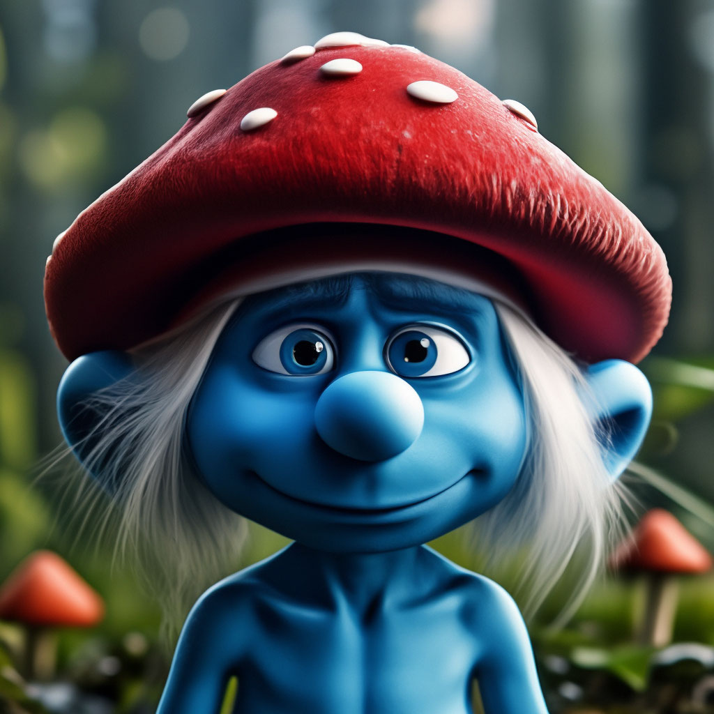

Oque são?
um grupo de pequenos seres azuis que vivem em casas de cogumelos, criados pelo cartunista belga Peyo
Personagens

Papai smruf
O sábio e líder dos smurfs, Papai Smurf é conhecido por sua barba branca e por sua paciência. Ele guia a vila com sabedoria, usando seus conhecimentos de magia e ciência para proteger todos.

smrufette
A única smurf feminina original da vila, Smurfette é gentil, curiosa e cheia de energia. Sempre disposta a ajudar os outros, ela combina beleza, coragem e um coração generoso.

ranzinza
Sempre de mau humor e reclamando de tudo, é conhecido por seu bordão “Eu odeio isso!”. Apesar da atitude rabugenta, ele tem um bom coração e se preocupa com seus amigos.